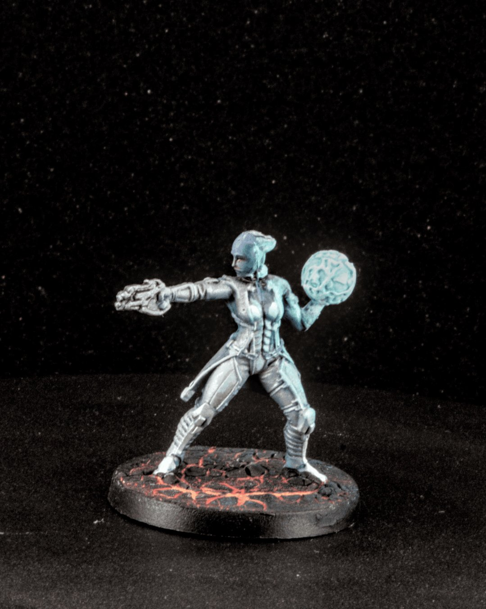
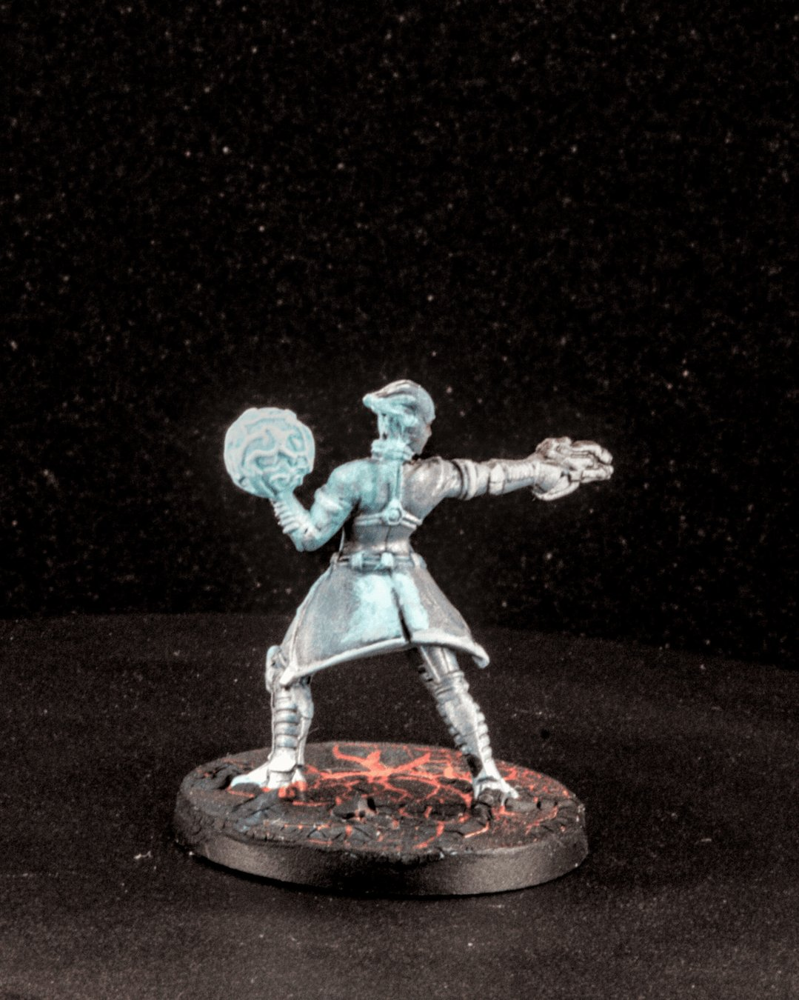
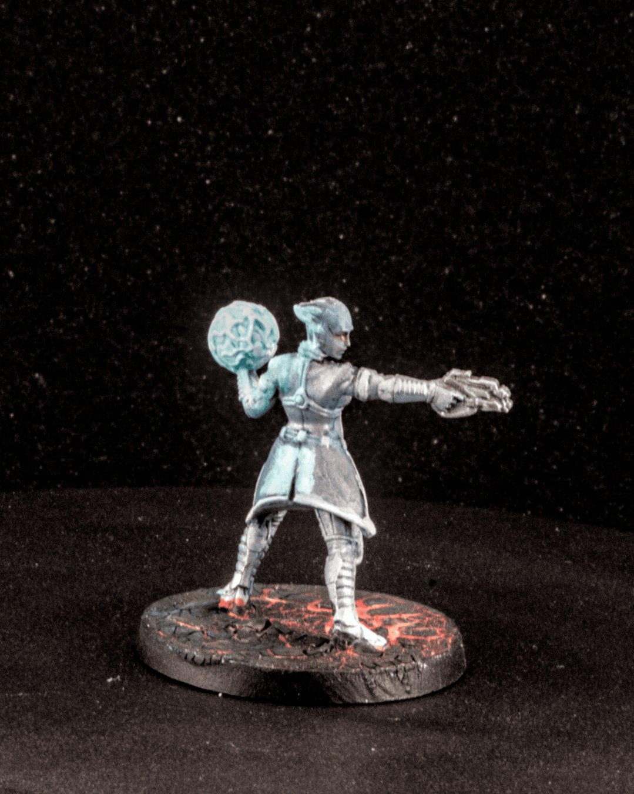
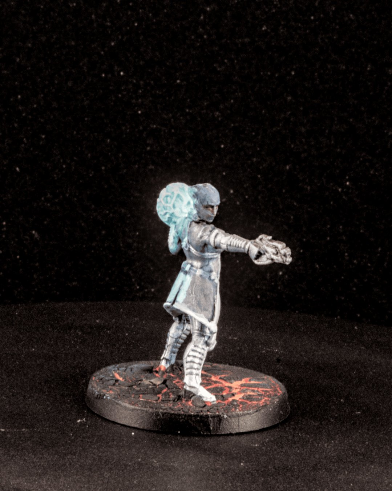
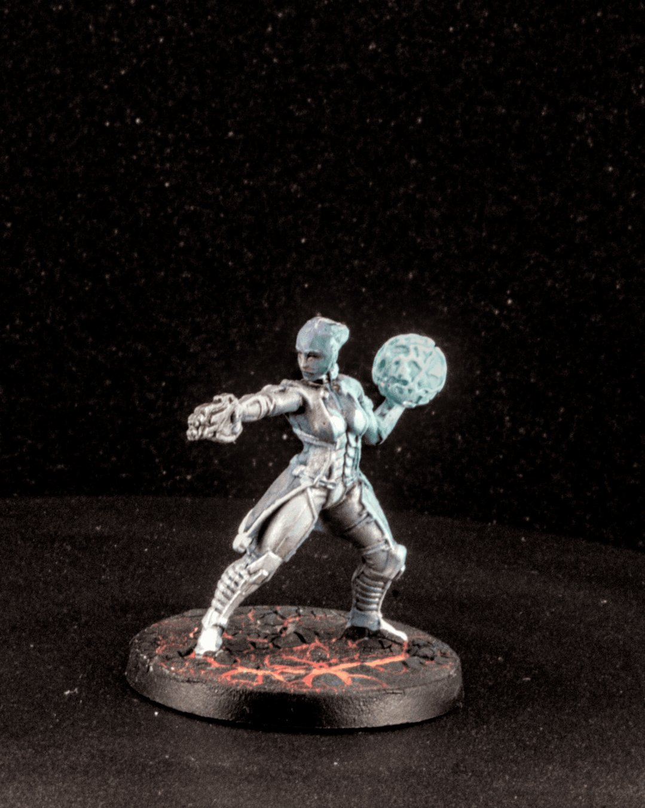

Liara T’Soni
Liara T’Soni, mid-cast, calm and focused even as biotics bend the space around her. She’s always been the quiet constant of Mass Effect, curiosity first, compassion close behind, and a surprising amount of resolve when it actually matters.
For this one, I leaned into cool blues and pale teals to keep her biotics feeling controlled rather than explosive, more precision than raw power. The glow was kept tight so it reads as contained energy, not full OSL chaos, while the armor stayed muted to let the biotic sphere do the talking. Subtle contrast, small highlights, and letting the pose carry the drama.
Painted for the Mass Effect board game by @modiphiusgames
Paints from @thearmypainter
#MiniaturePainting #MassEffect #BoardGames #Miniatures #Painting